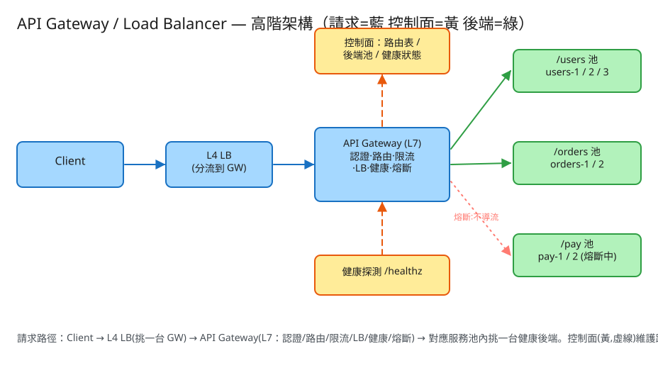

H 基礎設施 建議 35 分鐘 Design an API Gateway / Load Balancer
/users/*、/orders/*）/ Host / Header 把請求導到對應的上游服務池（upstream pool）。| 指標 | 假設 | 推算 |
|---|---|---|
| 總流量 | 1 億請求/日 | ~1.2k QPS（峰值 ×5 ≈ 6k QPS） |
| Gateway 節點 | 每節點 ~5k QPS（L7 解析有成本） | 峰值需 ~2~3 台 + 冗餘，前面再放一層 L4 LB 分流 |
| 後端服務 | 數十個微服務，每服務 2~10 個實例 | 路由表規模小（百量級規則），可全量快取在每台 Gateway 記憶體 |
| 健康狀態 | 每後端一個 up/down + 熔斷器狀態 | 幾百個 entry，KB 級；關鍵是更新要快且各 Gateway 看法一致 |
| 延遲預算 | Gateway 自身 overhead | 路由+LB 決策 < 1ms；瓶頸通常在後端與網路 RTT，不在 Gateway 算法 |
# Gateway 對「外」沒有自己的業務 API，它是反向代理（reverse proxy）。
# 客戶端只是正常打業務路徑，Gateway 透明轉發：
GET /users/42 → 路由到 users 池 → LB 挑 users-3 → 轉發
GET /orders/777 → 路由到 orders 池 → LB 挑 orders-1 → 轉發
# Gateway 對「內」的控制面 API（管理路由與後端）：
PUT /admin/routes/{prefix} # 設定/更新一條路由
Body: { "prefix":"/users", "upstream":"users-pool", "lb":"round_robin",
"timeout_ms":800, "retries":1, "rate_limit":"1000/min" }
PUT /admin/upstreams/{pool} # 設定服務池的後端清單
Body: { "backends":["10.0.1.5:8080","10.0.1.6:8080"], "health":"/healthz" }
# 後端被熔斷 / 全部不可用時，Gateway 回給客戶端：
HTTP/1.1 503 Service Unavailable # 池內無健康後端
HTTP/1.1 502 Bad Gateway # 後端回錯/逾時
HTTP/1.1 429 Too Many Requests # 觸發 per-route 限流（呼應第⑲題）
# 路由表（route table）：前綴 → 服務池 + 策略
ROUTE prefix("/users") -> { upstream:"users-pool", lb:"round_robin",
timeout_ms, retries, rate_limit }
# 服務池（upstream pool）：一組後端
POOL "users-pool" -> [ backend, backend, ... ]
# 後端（backend）的執行期狀態（健康 + 熔斷 + 負載）
BACKEND {
id:"users-3", addr:"10.0.1.7:8080",
up: true, # 健康檢查結果
conns: 12, # 目前在途連線數（least-conn 用）
cb_state: "closed", # closed | open | half_open（熔斷器）
consecutive_fails: 0, # 連續失敗計數
open_until: 1717142410 # open 狀態的冷卻到期時間
}
✏️ 用 Excalidraw 開啟編輯（diagram.excalidraw） ┌────────────────────┐
│ 控制面：路由表 / │
│ 後端池 / 健康狀態(黃)│
└─────────┬──────────┘
│ 下發設定
▼
客戶端 ─請求(藍)→ L4 LB ─→ API Gateway (L7) ──路由+LB挑一台──▶ users 池 (綠)
(挑GW) │ 認證·路由·限流 ├──▶ orders 池
│ ·LB·健康·熔斷 └──▶ pay 池(熔斷中→繞過)
│
健康探測 /healthz ◀─────────────────────────────── 各後端| L4（傳輸層） | L7（應用層） | |
|---|---|---|
| 看什麼 | IP / port（TCP/UDP） | HTTP 路徑 / Header / Cookie / method |
| 能力 | 快、低 overhead，但看不懂內容 | 能依路徑路由、改寫 Header、認證、限流、熔斷 |
| 定位 | 常放最前面分流到 Gateway 群 | 就是「API Gateway」本身 |
典型部署是兩層疊加：L4 把連線打散到多台 L7 Gateway，L7 再依內容做精細路由與治理。
| 演算法 | 原理 | 取捨 |
|---|---|---|
| 輪詢 Round-Robin | 依序輪流挑下一台。 | 最簡單、分布最均勻；但不看後端真實負載，慢機器一樣被分到等量。 |
| 加權輪詢 Weighted RR | 依機器規格給權重，強的多分。 | 處理異質後端；權重要人工或自動調。 |
| 最少連線 Least-Connection | 挑目前在途連線最少的後端。 | 對長連線/處理時間不一的場景更公平；要維護即時連線數。 |
| 一致性雜湊 Consistent Hash | 把 key（user/session）雜湊到環上，固定落到同一台。 | 提供會話親和（sticky）/ 快取命中；後端增減時只重洗少量 key（vs 取模全洗）。 |
hash(key) % N，後端數 N 一變（擴縮容），幾乎所有 key 都重新對應，快取全失效。一致性雜湊把後端放到雜湊環上，增減一台只影響環上相鄰的一段 key → 是有狀態親和場景（會話、分片快取）的標準解。/healthz，連續失敗 → 標 down → 從候選池移除。恢復後連續成功 → 標 up 加回。closed（正常） ──連續失敗達門檻 N──▶ open（熔斷，快速失敗，不導流）
▲ │ 冷卻時間到
│ 試探成功 ▼
└────────── half_open（半開，放「一個」試探請求）
│ 試探失敗 → 退回 open（再等一輪冷卻）Gateway 是放認證（驗 JWT / API key）與限流（呼應 第⑲題）的天然位置——在轉發前統一處理，後端服務就不必各自重做。
| 階段 | 瓶頸 | 對策 |
|---|---|---|
| 單台 Gateway | 全站咽喉，掛了全站死 | Gateway 無狀態 + 多實例 + 前置 L4 LB 分流；任一掛掉自動繞過 |
| 健康狀態同步 | 各 Gateway 對後端死活看法不一 | 主動探測 + 控制面集中下發；容忍短暫不一致（被動式即時補位） |
| 長連線（WebSocket/gRPC stream） | 連線黏在某台 Gateway，難重均衡 | 連線層親和 + 優雅排空（drain）；擴容對新連線生效 |
| 熱路由 / 熱 key | 某條路徑或某 key 爆量打爆單一後端 | per-route 限流 + 加權/最少連線分散；一致性雜湊熱點再加虛擬節點/分桶 |
| 設定下發 | 路由/後端變更要即時生效又不抖動 | 控制面推送 + 本地快取 + 原子切換（不中斷在途請求） |
本題 demo 聚焦 Gateway 的決策鏈（也是面試真正考點），可實際用 PHP 內建伺服器跑起來：
src/Gateway.php 核心引擎：路由（最長前綴比對選池）、負載均衡（round-robin / least-connection / consistent-hash 可切換）、健康檢查（kill 的後端不進候選、自動繞過）、熔斷器（連續失敗 3 次 → open，冷卻 10 秒 → half_open 試探 → 成功 closed）。狀態用 flock 原子讀-改-寫。public/index.php 路由 + 深色測試頁（註冊服務池、送請求看挑到哪台、kill 看繞過、連續失敗看熔斷、看流量分布長條圖）。# 啟動
cd demo
php -S localhost:8049 -t public
# 瀏覽器開 http://localhost:8049
# ① 一鍵建範例（/users 3 台 + /orders 2 台）
# ② 連送 12 次 → 看 round-robin 平均輪流；切「最少連線/一致性雜湊」看分布差異
# ③ kill 一台 → 再送，看自動繞過只導到健康的
# ④ 對某台連續失敗 ×4 → 熔斷打開自動繞過；等 10 秒看它轉半開試探flock(LOCK_EX) 把整段「讀狀態 → 跑 LB/熔斷 → 寫回」鎖成單一原子操作，模擬真實 Gateway 對共享狀態（通常在 Redis/etcd）的原子更新。但路由（最長前綴）、三種 LB 演算法、健康檢查繞過、熔斷器 closed→open→half_open→closed 的狀態轉移皆為真實可執行的邏輯。要上線只需把「JSON 計數器」換成真正轉發 HTTP + 主動健康探測，決策邏輯完全不變。